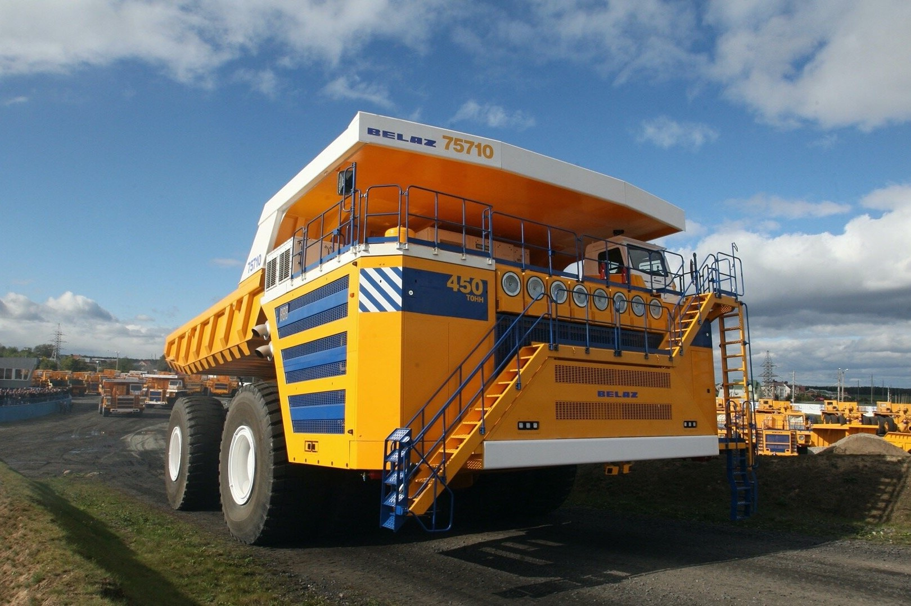

Добро пожаловать в Минскую область!
Географическая информация
Минская область – центральная, самая большая по территории область
Республики Беларусь, граничит со всеми областями республики. Площадь –
39,9 тыс. квадратных километров, наибольшая протяженность с севера на юг
– 315 км, с востока на запад – 240 км. Занимаемая площадь (с Минском)
составляет 19,4% площади Беларуси. Количество жителей Минской области по
состоянию на 1 января 2022 года - 1 465 755 человек, в том числе
городское - 803 870 человек, сельское - 661 885 человек. Крупные города
региона - Борисов (137 703 человека), Солигорск (99 622 человека),
Молодечно (90 136 человек), Жодино (64 318 человек) и Слуцк (60 794
человека). Из агрогородков наибольшие по количеству населения - Лесной
(Минский район) - 19,5 тыс. человек, Лошница (Борисовский район) - 6452
человека, Слобода (Озерицко-Слободский сельсовет Смолевичский район) -
3148 человек.


Промышленность
Промышленными организациями Минской области выпускаются такие важнейшие
виды продукции областного и республиканского значения различных отраслей
обрабатывающей промышленности, как калийные удобрения, легковые
автомобили, карьерные самосвалы, сахар, мясо и субпродукты, молочная
продукция, макаронные изделия, воды минеральные и газированные,
лекарственные средства и фармацевтические препараты, древесина для
последующей переработки и производства готовых изделий, панели и плиты
паркетные, гранулы топливные (пеллеты) из опилок и прочих древесных
отходов, кожи дубленные и выделанные, трикотажные изделия, брикеты из
торфа и многое другое.

Как появилась Минская область?
Исторические корни Минщины уходят вглубь веков: около 950 лет назад на
берегах Свислочи появились первые поселения. Они дали начало название
городу Минску, а впоследствии - и столичной Минской области. В
октябре-ноябре 1917 года, после Октябрьской революции, на территории
Минской губернии установилась Советская власть. Была создана новая
система административно–территориального деления. В 1921 году последовал
раздел Беларуси на Западную и Восточную. Граница прошла через Минщину. В
августе 1924 года на территории Восточной части Минщины образованы
Слуцкий, Минский и Борисовский округа. В 1924–1930 годы Минск был
центром Минского округа, а с 1934 года – района. 15 января 1938 года
Первая сессия Верховного Совета СССР приняла Постановление «Об изменении
и дополнении статей Конституции СССР «О введении в БССР областного
административного деления», согласно которому образована Минская
область. В 1939 году освобождены Западные земли Белоруссии – ныне
Мядельский, Вилейский, Воложинский, Молодечненский, Столбцовский,
Несвижский и Клецкий районы. Сегодня Минская область – самая большая по
территории в Беларуси. Её площадь – 39,9 тыс. кв. км. или 19,2%
территории страны. Административное деление представлено 22 районами, 1
городом областного подчинения, 2 городами районного подчинения, 18
поселками городского типа, 5207 сельскими населенными пунктами.

Интерестные факты
Минская область - самая чистая в Беларуси
Минская область граничит со всеми областями в Республике Беларусь
В Минской области есть залежи калийных и каменных солей, торфа, глины,
сапропелей, песчано-гравийных материалов, строительного песка; имеются
минеральные воды. Разведаны месторождения железной руды, горючих
сланцев.
В области находится более двадцати музеев
вернуться на главную
вернуться в начало